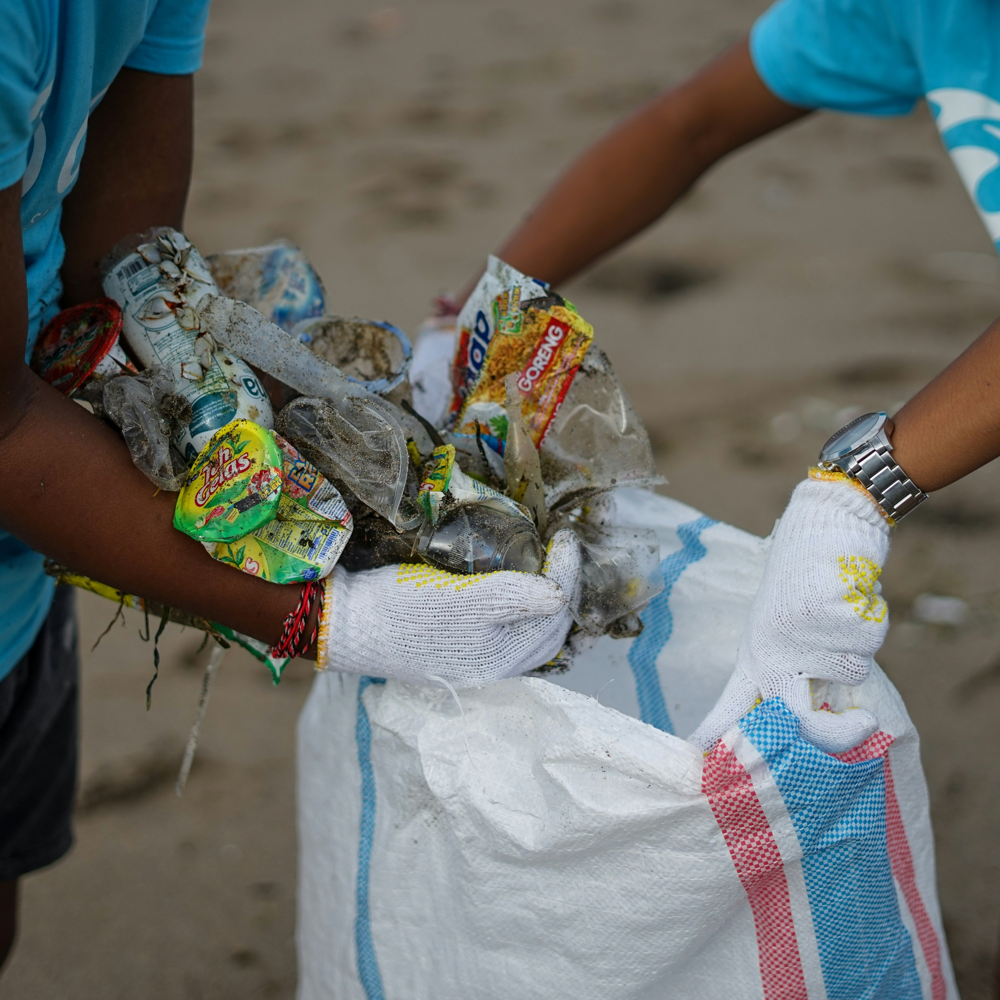
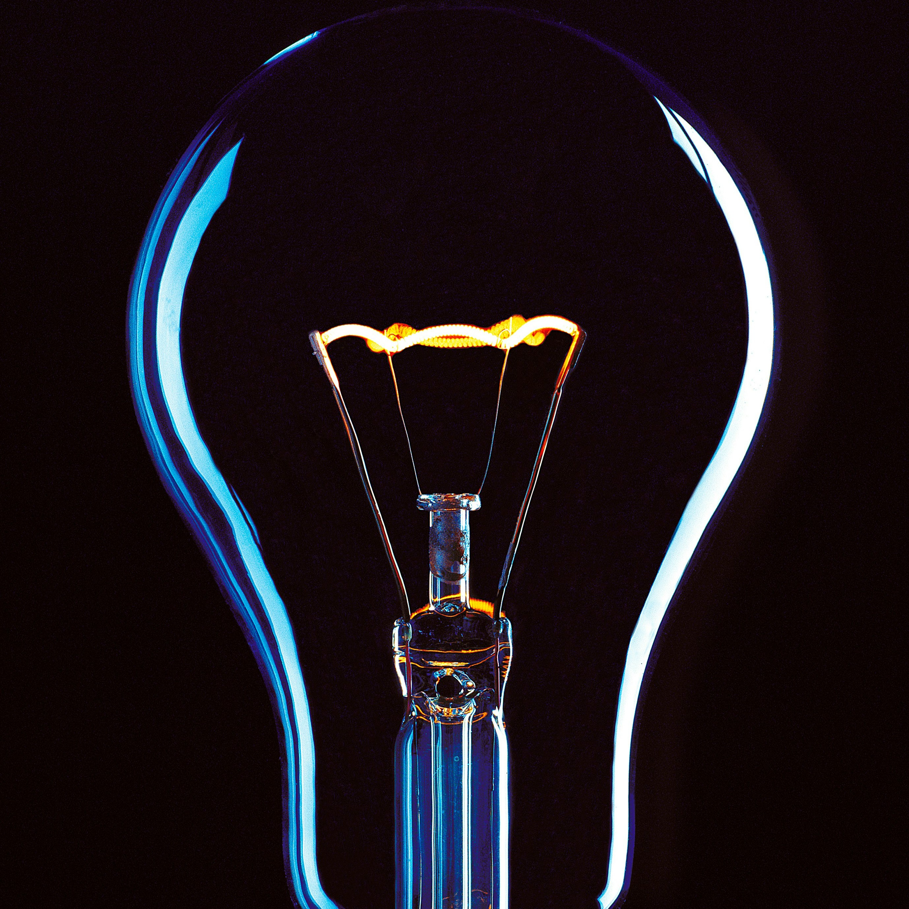
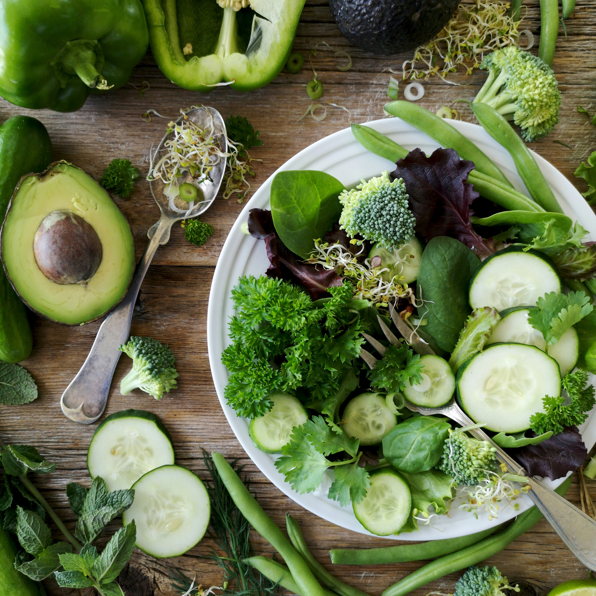

A környezetvédelem nem globális egyezményekkel kezdődik, hanem a mindennapi döntéseinkkel. Ismerd meg, hogyan teheted fenntarthatóbbá a háztartásodat és az életmódodat!
Tippek felfedezése Kiadvány letöltése
A magyar háztartásokban évente 60 kg/fő élelmiszerhulladék keletkezik. Tanuld meg a szelektálás és a megelőzés lépéseit!
Tovább a hulladékhoz »
A fűtés 1 °C-os csökkentése 6% spórolást jelent. A standby üzemmód kiiktatásával pedig a villanyszámlád is csökken.
Tovább az energiához »
1 kg marhahús előállításához 15 000 liter víz kell. Egy húsmentes nappal 15%-kal csökkentheted az ökológiai lábnyomod.
Tovább az étkezéshez »év a PET palackok lebomlási ideje
energiamegtakarítás aludoboz újrahasznosításakor
pazarlott élelmiszer / fő / év Magyarországon
kevesebb áramfogyasztás LED használatával